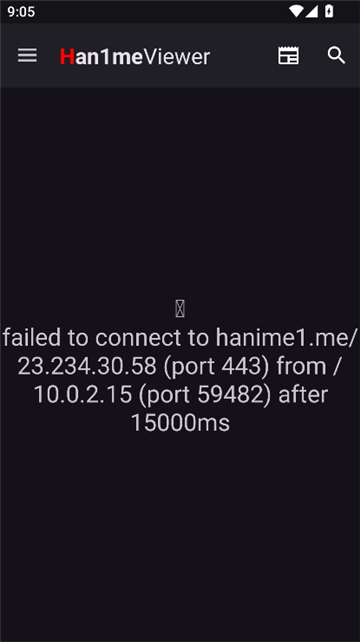
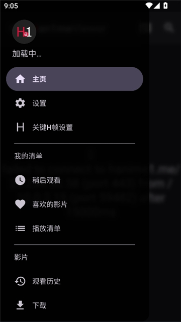

从零上手 HanimeViewer：安装、播放到本地导入的完整走查
第一次装 HanimeViewer 的朋友最容易卡在哪？未知来源授权怎么开、播放花屏怎么救、本地视频怎么统一进库——这篇按实际流程一步步带你走通。
这篇教程走完，你能把 HanimeViewer 从下载到日常使用的完整链路顺一遍：装得上、播得稳、本地老片也能统一进库用。HanimeViewer 是一款主打成人向视频浏览与播放的安卓客户端，内置两套播放内核、下载管理、观看历史同步，以及一套相对完善的隐私保护（应用锁、图标伪装、数据备份），算是同类工具里功能覆盖面比较全的一类。
准备：你需要什么
- 一台安卓设备（8.0 及以上均可；部分联发科老芯片机型后续可能需要切内核，下面会讲）；
- 一份 HanimeViewer 安装包——从hanimeviewer官网或官方下载渠道拿最稳，别碰来路不明的二次打包版本；
- 用来打开 APK 的应用（文件管理器、网盘客户端都行，记住是这个应用需要被授权，不是 HanimeViewer 本身）。
别急着点安装，先把「允许未知来源」这一步搞清楚——90% 的新手第一次装卡的就是这一关。
第一步：授权未知来源，让安装按钮真正能用
安卓默认只允许从应用商店安装。点开 APK 时系统弹「禁止安装未知应用」不是 HanimeViewer 有问题，是系统的常规防线。处理起来就三步：
- 弹窗里点「设置」，直接跳到来源应用的安装权限页；
- 打开「允许来自此来源的应用」开关——注意授权对象是你刚才用来点开 APK 的那个应用，比如某云盘或某文件管理器，不是 HanimeViewer；
- 返回安装界面再点一次安装，这次应该能正常跑完。

几个容易忽略的细节：
- 安卓 8.0 起授权是按应用来源的，给 A 网盘开了，换 B 文件管理器再装一个 APK，还得对 B 单独授权一次；
- 被公司或学校 MDM 管控的设备，设置项可能呈灰色、彻底不让开——这种情况没有绕过办法，换一台个人设备；
- 如果授权完还是装不上，跳到安装失败排查（解析失败、包名冲突是另外两类问题）。
第二步：启动后的第一遍设置
装好打开应用，先别忙着搜片，有三件事值得在第一次启动时顺手调：播放内核、网络设置、应用锁。
播放内核：双内核是干嘛的
HanimeViewer 内置两套播放内核——ExoPlayer（Media3/JZVD）和 MPV。双内核不是噱头，是不同设备芯片、不同片源编码的互补方案。什么时候切：
- 画面能开但花屏、绿屏、音画不同步 → 解码兼容问题，直接切；
- 某一片源始终加载不出画面 → 先降画质，不行换内核；
- 联发科老芯片机型反馈的播放异常，切内核或改用软件解码是最常见的解法。
切换路径：侧边栏 → 设置 → 播放器设置 → 「切换播放器内核」，选另一个、回原片重播验证。同一个设置页里还有默认倍速、长按快进倍率、进度滑动灵敏度这些细节，hanimeviewer文档里有更完整的参数表，按你自己的手势习惯调一遍，能省不少时间。

网络设置：Cloudflare 人机验证与备用域名
HanimeViewer 访问的站点在 Cloudflare 后面，新环境第一次打开首页很可能先撞人机验证。处理方式通常是等它加载完、完成滑块即可；如果反复弹或加载失败，去网络设置页检查两件事：内置 Hosts 有没有被关掉、备用域名有没有需要手动切的。代理设置也在同一页，需要走代理的直接填就行。
应用锁：别省这一步
内容性质决定这款应用的隐私敏感度比较高，建议第一次跑通就把应用锁和图标伪装开起来——应用锁可以是指纹、图案或数字密码，图标伪装能把启动器里的图标换成计算器、笔记这类常规应用的样子。两个都在设置 → 设置与隐私里，找得到。
第三步：把本地老片也统一进库
HanimeViewer 不只是一个在线客户端，下载管理里还提供了「导入本地文件」入口，把手机存储里已有的视频导进来，用它自带的播放器统一管理。适合手里存了一批老片、想换一个界面干净点的播放器这种场景。

步骤：
- 侧边栏打开下载页；
- 找到导入本地文件的按钮；
- 在系统文件选择器里挑视频文件；
- 导入后出现在本地列表里，和离线下载的内容一起管理。
前置条件是系统存储权限——首次导入时弹出「所有文件访问」或媒体读取权限授权，同意即可；之前被你拒过的，到系统「应用信息 → 权限」里补开。
两个常见坑：
- 文件选择器里根本看不到目标文件：多半是格式不在支持列表，或者是罕见编码（导入后也可能黑屏），这时候就轮到双内场上场了，切换一次 MPV 试试；
- 导入后黑屏：同样先切内核，还不行说明文件编码本身不受支持，转回系统播放器或先转码再导。
另外要注意：导入是引用，不是复制或转码。原文件删了，列表里的条目自然失效。别把这个入口当成「备份」来用。
第四步：观看历史与续播
所有片子都是从侧边栏「影片区 → 观看历史」续播的——看过的条目记录了上次停在哪，点进去回详情页继续。历史分两类：
- 本地历史：存在设备上的观看痕迹，离线也能用；
- 在线历史：登录账号后和站点同步，换设备不丢（社区重制版把两类历史做成了历史页里的独立标签，各自带搜索框）。
日常清理时机：翻找起来费劲时按条目或批量清理（长按进入多选）；换机或出售设备前务必清一次——配合应用锁和设备锁一起做，别留尾巴。
清除应用数据会连带清掉本地历史和所有标记，操作前想清楚。稳妥做法是先跑一次设置里的「数据备份」再清。
常见卡点汇总
卡点一：装不上，系统始终拦未知来源原因 99% 是授权给错了应用——你用文件管理器点开的 APK，就得给文件管理器开权限，不是给 HanimeViewer。再看一眼授权页上的应用名，确认没搞混。
卡点二：画面花、绿屏、音画不同步切播放内核。先到播放器设置里把内核从 ExoPlayer 换成 MPV 或反过来，重播原片验证。还不行再降画质。
卡点三：本地文件导不进来先到系统权限页检查「所有文件访问」有没有开；再确认文件格式是不是常规的 MP4/MKV，罕见编码先转回系统播放器验证能不能播。
往下还能玩什么
双内核调完、本地老片也统一进库了，可以再顺一遍搜索（关键词 + 高级筛选面板）、下载路径和自动分组、以及关键 H 帧设置——这些都是文档里篇幅最长的模块，用起来也最能体现 HanimeViewer 和普通播放器的差别。
这款应用的资料在三处仓库都能找到，国内访问优先走 Gitee 或 GitCode，GitHub 上的版本更新最勤，按需取用就行。